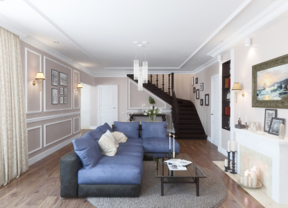

2019
Квартира на Петроградке



О проекте
Интересный проект в стиле модерн: стекло с монохромным узором, пилястры и нежные ручки-розетты из мурманского стекла перемежаются с современными фасадами кофейного цвета, с декором в тон.
Интересная часть истории: клиентка заказывала аналогичную мебель дважды! При продаже первой квартиры покупатели отказались заключать договор без дизайнерской мебели, делавшей помещение таким стильным. Пришлось уступить гарнитур новым владельцам и сделать повторный заказ.